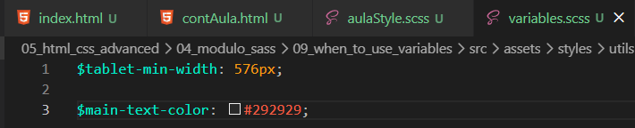
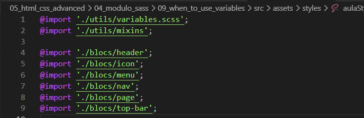

When to use variables?
Intro
Além de mixins, nosso arquivo utils geralmente inclui variáveis para que possamos configurar o layout de forma simples em um único lugar.
Além de mixins, nosso arquivo utils geralmente inclui variáveis para que possamos configurar o layout de forma simples em um único lugar.
Para iniciar, iremos criar um arquivo SCSS para variáveis.

Feito isso, agora podemos ir em nosso arquivo onde estão os caminhos para os mixins e, lá, colocar o caminho de nossas variáveis.
Obs: ele deve ser colocado em primeiro, pois em nosso mixins já estamos usando uma variável, fazendo com que a ordem de conexão importe.
Feito isso, uma dica importante é que ao fazer variáveis devemos tomar cuidado, pois às vezes uma propriedade pode ter o mesmo valor que outra, mas não ter relação entre si. Nesse caso, não devemos vinculá-las.
